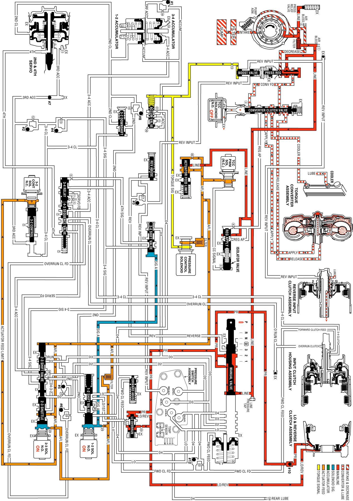

Park - Engine Running
Park - Engine Running
With the gear selector lever in the PARK (P) position and the engine running, the line pressure from the oil pump assembly is directed to various components in the valve body and the oil pump.
Pressure Regulator Valve
The pressure regulator valve regulates the oil pump output (line pressure) in response to the signal fluid pressure, the spring force and the line pressure acting on the end of the valve. The line pressure is routed through the valve and into both the converter feed and the decrease fluid circuits. Regulated line pressure is also directed to the manual valve, the converter clutch valve, the actuator feed limit valve, and the regulated apply valve.
Pressure Relief Valve
Controlled by spring force, this checkball limits the maximum value of the line pressure. When the line pressure reaches this limiting value, fluid is exhausted past the ball and returns to the sump.
Line Pressure Tap
The line pressure tap provides a location to measure the line pressure with a fluid pressure gage.
Actuator Feed Limit Valve
Biased by spring force and orificed AFL fluid, it limits the maximum value of line pressure entering the AFL fluid circuit. Below this limiting value, the AFL fluid pressure equals the line pressure. The AFL fluid is routed to the pressure control solenoid valve, the 3-2 control solenoid valve, the TCC PWM solenoid valve, the 1-2 and 2-3 shift solenoid valves, and the 2-3 shift valve train.
Pressure Control (PC) Solenoid Valve
Controlled by the powertrain control module (PCM), the PC solenoid valve regulates the filtered AFL fluid into the torque signal fluid pressure. The PCM controls this regulation by varying the current value to the PC solenoid valve in relation to the throttle position and other vehicle operating conditions.
Torque Converter Clutch (TCC)
Torque Converter Clutch PWM Solenoid and Regulator Apply and Isolator
Valve
AFL fluid is routed to the TCC PWM solenoid valve, in Park the PCM has the duty cycle turned OFF. This prevents AFL fluid from entering the converter clutch signal fluid circuit. Regulated line pressure is routed to the regulator apply valve, which is open with CC signal circuit empty, and blocks line pressure from entering the regulated apply circuit. Any fluid in the regulated apply circuit will exhaust at the regulated apply valve.
TCC Solenoid Valve
Important: TCC converter feed valve assembly (#4), in the converter feed circuit, prevents converter drain down. The orifice is smaller than the exhaust through the TCC solenoid valve. Therefore, fluid pressure does not build up at the end of the converter clutch apply valve.
Under normal operating conditions, the PCM keeps the normally open TCC solenoid valve de-energized (OFF). Converter feed fluid exhausts through the open TCC solenoid valve, and spring force keeps the converter clutch apply valve in the release position.
Converter Clutch Valve
Held in the release position by spring force, it directs converter feed fluid into the release fluid circuit. Also, fluid returning from the converter in the apply fluid circuit is routed through the valve and into the cooler fluid circuit.
Torque Converter
Release fluid pressure unseats the TCC apply checkball (#9), keeps the pressure plate released from the converter cover and fills the converter with fluid. Fluid exits the converter between the converter hub and the stator shaft in the apply fluid circuit.
Cooler and Lubrication System
Cooler fluid from the converter clutch apply valve is routed through the transmission fluid cooler and into the lubrication fluid circuits.
Manual Valve
Controlled by the selector lever and the manual shaft, the manual valve is in the Park (P) position and directs the line pressure into the PR (Park/Reverse) fluid circuit. Line pressure is blocked from entering any other fluid circuit at the manual valve.
Lo and Reverse Clutch Applies
Lo and Reverse Clutch Piston
The PR fluid seats the lo and reverse clutch checkball (#10) and is orificed to the outer area of the piston. Orificing the PR fluid around the #10 checkball helps control the lo and reverse clutch apply. Also, Lo/reverse fluid pressure from the lo overrun valve acts on the inner area of the lo and reverse clutch piston in order to increase the clutch holding capacity.
Lo Overrun Valve
The PR fluid pressure moves the valve against the spring force and fills the Lo/reverse fluid circuit. Lo/reverse fluid is orificed (323) back to the lo overrun valve in order to assist the PR fluid in moving the valve against the spring force. The spring force provides a time delay for the PR fluid filling the Lo/reverse fluid circuit. The Lo/reverse fluid is routed to the inner area of the lo and reverse clutch piston in order to increase the holding capacity of the clutch.
Transmission Fluid Pressure (TFP) Manual Valve Position Switch Assembly
The TFP manual valve position switch consists of five fluid pressure switches: D2 and D3 are normally closed and D4, Lo and Rev are normally open. All fluid circuits routed to the assembly are empty and the TFP manual valve position switch signals the PCM that the transmission is in either Park or Neutral.
Shift Solenoid Valves (1-2 and 2-3)
Both shift solenoid valves, which are normally open, are energized by the PCM and block fluid from exhausting. This maintains the signal A fluid pressure at the 1-2 shift solenoid valve and signal B fluid pressure at the 2-3 shift solenoid valve.
Shift Valves (1-2, 2-3 and 3-4)
Signal A fluid pressure holds the 1-2 shift valve in the downshift position and the 3-4 valve in the upshift (first and fourth gear) position. The signal B fluid pressure from the 2-3 shift solenoid valve holds the 2-3 shift valve train in the downshift position.
Park - Engine Running
Park - Engine Running:
